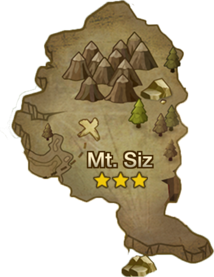

Garen Forest
Mt.Siz
Kabir ruins
Runes
Buildings
References
Mt.Siz

Drops
Monsters:
- Golem(fire): 3 star
- Rainbowmon: awakened 2 star
- Slime(fire): silver 1 star
- Mimic(wind): silver 1 star
- ghost(water): silver 1 star
Crafting materials:
- soild rock
- solid iron ore
Unknown scroll
stages
stage 1: limbo
Normal:
- slime(fire): silver 1 star, level 3
- Mimick(wind): silver 1 star, level 3
- [chief] Mimick(wind): silver 3 star, level 4
Hard:
- slime(fire): silver 2 star, level 18
- Mimick(wind): silver 2 star, level 18
- [chief] Mimick(wind): silver 4 star, level 19
Hell:
- Slime(fire): silver 3 star, level 40
- Mimick(wind): silver 3 star, level 40
- [chief] Mimick(wind): silver 6 star level 40
stage 2: doom
Normal:
- slime(fire): silver 1 star, level 4
- slime(water): silver 1 star, level 4
- [chief] slime(fire): silver 3 star, level 4
Hard:
- slime(fire): silver 2 star, level 19
- slime(water): silver 2 star, level 19
- [chief] slime(fire): silver 4 star, level 1
Hell:
- slime(fire): silver 3 star, level 40
- slime(water): silver 3 star, level 40
- [chief] slime(fire): silver 6 star level 40
stage 3: Wrath
Normal:
- ghost(water): silver 1 star, level 4
- ghost(wind): silver 1 star, level 4
- [chief] slime(water): silver 2 star, level 5
Hard:
- ghost(water): silver 2 star, level 19
- ghost(wind): silver 2 star, level 19
- [chief] slime(water): silver 4 star, level 19
Hell:
- ghost(water): silver 3 star level 40
- ghost(wind): silver 3 star level 40
- [chief] slime(water): silver 6 star, level 40
stage 4: Destruction
Normal:
- Golem(wind): 2 star, level 5
- Golem(fire): 2 star, level 5
- [chief] Golem(wind): 3 star, level 5
Hard:
- Golem(wind): 3 star, level 19
- Golem(fire): 3 star, level 19
- [chief] Golem(wind): 4 star, level 19
Hell:
- Golem(wind): 3 star level 40
- Golem(fire): 3 star level 40
- [chief] Golem(wind): 6 star, level 40
stage 5: Damnation
Normal:
- Golem(fire): 2 star, level 6
- Golem(fire): 2 star, level 6
- [chief] Golem(fire): 3 star, level 6
Hard:
- Golem(fire): 3 star, level 20
- Golem(fire): 3 star, level 20
- [chief] Golem(fire): 4 star, level 20
Hell:
- Golem(fire): 3 star level 40
- Golem(fire): 3 star level 40
- [chief] Golem(fire): 6 star, level 40
stage 6: Rage
Normal:
- Mimick(wind): silver 2 star, level 7
- Golem(fire): 2 star, level 7
- [chief] Golem(water): 3 star, level 7
Hard:
- Mimick(wind): silver 3 star, level 20
- Golem(fire): 3 star, level 20
- [chief] Golem(water): 4 star, level 20
Hell:
- Mimick(wind): silver 4 star level 40
- Golem(fire): 4 star level 40
- [chief] Golem(water): 6 star, level 40
stage 7(BOSS): Hollows
Normal:
[Boss] Golem(fire): 3 star, level 8
Hard:
[boss] Golem(fire): 4 star, level 21
Hell:
[boss] Golem(fire): 6 star, level 40